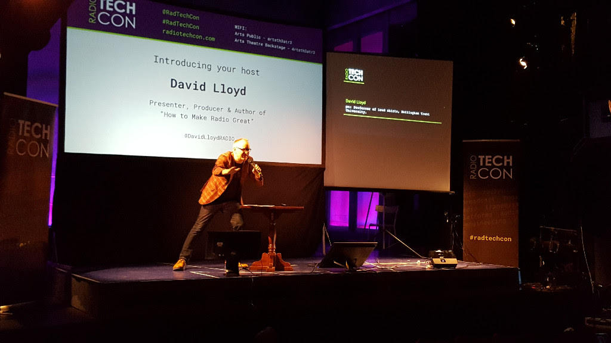

History
TechCon was founded in 2010 to bring together the brightest minds in technology. Over the years, it has grown from a small gathering of tech enthusiasts to one of the most influential conferences in the world.

TechCon was founded in 2010 to bring together the brightest minds in technology. Over the years, it has grown from a small gathering of tech enthusiasts to one of the most influential conferences in the world.
Our mission is to inspire innovation, foster collaboration, and pave the way for the future of technology. At TechCon, we strive to create an inclusive platform where ideas flourish and progress is made.
Over the years, TechCon has hosted some of the most influential figures in technology, including: